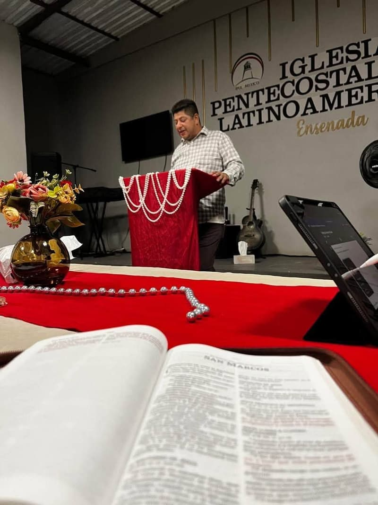

Lo que creemos
Somos una iglesia de IPUL México, la Iglesia Pentecostal Unida Latinoamericana en México. Lo que creemos viene de la Biblia y sigue la declaración de fe que publica nuestra iglesia nacional. Aquí está, en palabras sencillas, con los versículos que la respaldan.
Jesús es el centro
Jesús es el centro de todo lo que hacemos en la Iglesia Pentecostal Unida Latinoamericana (IPUL). Cantamos, Oramos y Predicamos en su poderoso Nombre. Toda nuestra vida se centra en Jesucristo, reconocemos y proclamamos que Él es Dios, y entendemos que mediante el conocimiento de su palabra y de su infinita Gracia podemos obtener vida eterna.
Jesús le dijo: Yo soy el camino, y la verdad, y la vida; nadie viene al Padre, sino por mí.

Un Señor, una fe, un bautismo
Declaramos esforzarnos para guardar la unidad del Espíritu en el vínculo de la paz, profesando nuestra adoración a un solo Señor y Dios, poniendo en práctica: Una fe y Un bautismo, ya que tenemos un solo Dios y Padre de todos en todos.
solícitos en guardar la unidad del Espíritu en el vínculo de la paz; un cuerpo, y un Espíritu, como fuisteis también llamados en una misma esperanza de vuestra vocación; un Señor, una fe, un bautismo, un Dios y Padre de todos, el cual es sobre todos, y por todos, y en todos.
Quién es Jesús
La Biblia nos dice que Jesús nació de una virgen, vivió una vida sin pecado y enseñó solamente por unos años en tierras bíblicas antes de ser crucificado en una cruz romana. Tres días después salió de su tumba y se levantó de entre muertos, muchas personas le vieron y poco después subió al cielo.
Durante su tiempo en este mundo, Jesús proclamó y demostró que tenía el Poder para:
- Perdonar los pecados
- Sanar enfermedades
- Echar fuera demonios
- Decidir nuestro destino eterno
En otras palabras, es Dios mismo manifestado en carne. Así es, Jesús es Dios mismo, Creador de todas las cosas, que se hizo carne, descendió del cielo y murió por nuestros pecados.
En el principio era el Verbo, y el Verbo era con Dios, y el Verbo era Dios.
Y aquel Verbo fue hecho carne, y habitó entre nosotros (y vimos su gloria, gloria como del unigénito del Padre), lleno de gracia y de verdad.
Todo lo que Jesús ha hecho, incluso su terrible sufrimiento y su muerte, no tendría significado sin la promesa de que Él Volverá y que nos dará Vida Eterna. Las Escrituras revelan que el universo entero fue creado por este Ser Divino que se manifestó en Jesucristo; que Él es Rey de Reyes y Señor de Señores. Además, sabemos que Jesús vive y es el camino a la Vida Eterna.
Porque la gracia de Dios se ha manifestado para salvación a todos los hombres.
Arrepentirse, bautizarse y recibir el Espíritu Santo
En el libro de los Hechos, la gente preguntó a Pedro qué debía hacer. Esto les dijo.
Pedro les dijo: Arrepentíos, y bautícese cada uno de vosotros en el nombre de Jesucristo para perdón de los pecados; y recibiréis el don del Espíritu Santo. Porque para vosotros es la promesa, y para vuestros hijos, y para todos los que están lejos; para cuantos el Señor nuestro Dios llamare.
Seguimos los mandamientos que el Espíritu Santo estableció en el libro de los Hechos:
- Arrepentirse
- Bautizarse en el nombre de Jesucristo para perdón de los pecados
- Recibir el don del Espíritu Santo
Nos reconocemos como miembros del cuerpo de Jesucristo, y por lo tanto, hermanos en la fe, todos los que profesamos los mandamientos establecidos por el Espíritu Santo en el libro de los Hechos de los Apóstoles. El mismo patrón aparece en Hechos 8:16 (se abre en una pestaña nueva), 10:43-48 (se abre en una pestaña nueva) y 19:1-7 (se abre en una pestaña nueva).
La iglesia de Jesucristo
Es la voluntad de Dios sacar del mundo un pueblo salvo para la Gloria de su Nombre, pueblo que constituye la iglesia de Jesucristo, la cual debe estar edificada sobre el fundamento de los apóstoles y profetas, siendo la principal piedra del ángulo Jesucristo mismo.
Así que ya no sois extranjeros ni advenedizos, sino conciudadanos de los santos, y miembros de la familia de Dios, edificados sobre el fundamento de los apóstoles y profetas, siendo la principal piedra del ángulo Jesucristo mismo.
Porque nadie puede poner otro fundamento que el que está puesto, el cual es Jesucristo.
Es necesaria la permanente comunión entre los miembros de la iglesia; impartir consejos y ser instruidos en la Palabra de Dios para la obra del ministerio, y para el ejercicio de los oficios espirituales provistos en la Biblia. Queremos ser un pueblo que honre y glorifique su nombre, celoso de buenas obras, una iglesia gloriosa, sin mancha, ni arruga, ni cosa semejante, sino santa.
quien se dio a sí mismo por nosotros para redimirnos de toda iniquidad y purificar para sí un pueblo propio, celoso de buenas obras.
a fin de presentársela a sí mismo, una iglesia gloriosa, que no tuviese mancha ni arruga ni cosa semejante, sino que fuese santa y sin mancha.
Nuestra misión
Jesús dio a su iglesia una comisión: anunciar las buenas nuevas de salvación a todos los hombres.
Y les dijo: Id por todo el mundo y predicad el evangelio a toda criatura.
La misma comisión aparece en Mateo 28:19-20 (se abre en una pestaña nueva), Marcos 16:15-20 (se abre en una pestaña nueva), Lucas 24:45-49 (se abre en una pestaña nueva) y Juan 20:20-23 (se abre en una pestaña nueva).
¿Preguntas?
Con gusto hablamos contigo de cualquier punto. Escríbenos por WhatsApp al 646 107 2193 (se abre en una pestaña nueva). También puedes leer la declaración de la iglesia nacional en ipulmexico.org (se abre en una pestaña nueva).
Reina-Valera 1960® © Sociedades Bíblicas en América Latina, 1960. Renovado © Sociedades Bíblicas Unidas, 1988. Utilizado con permiso. Énfasis añadido.